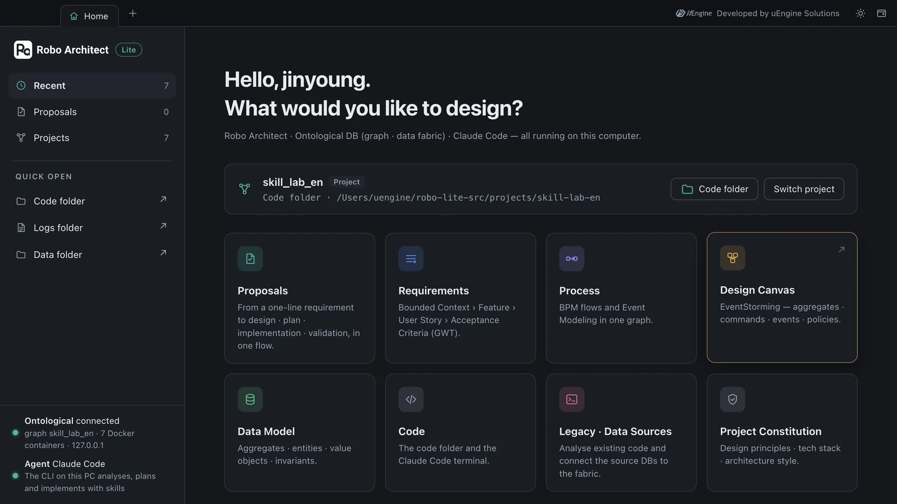
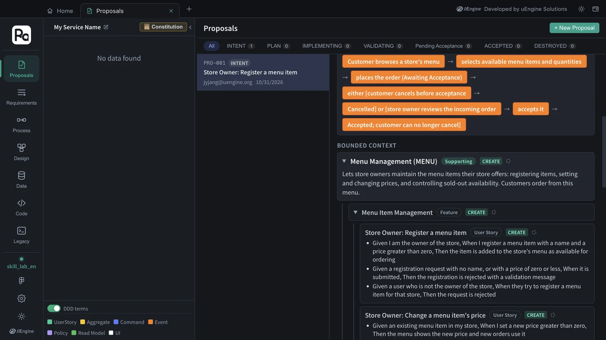
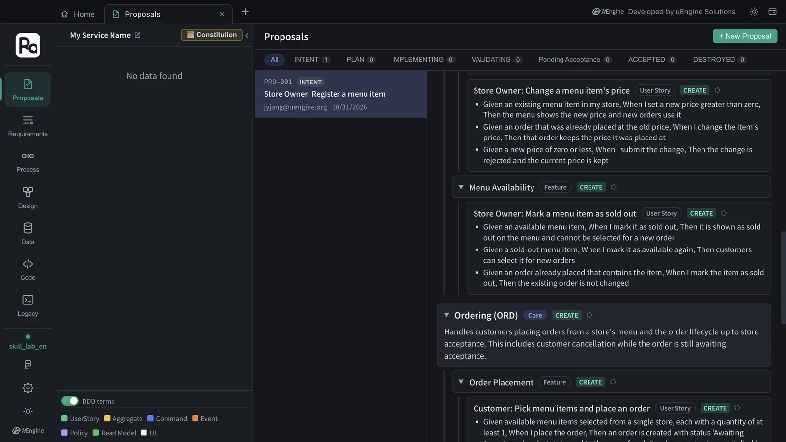

Every instruction Robo Architect follows when it analyzes, plans and implements a proposal is written as text in a skill file (SKILL.md). Add one rule line to a skill file and the engine's output changes. Try it yourself in a practice project and compare the results.
Skills are the engine#
Every time Chapters 3–5 said “Claude Code analyzes”, the app called claude on your computer and handed it one skill file as its instructions. A skill file is a Markdown document — purpose, procedure, output format and rules, written as text a person can read. Change this text, without touching any code, and the engine's judgment changes.
| Stage | Skill | In this tutorial |
|---|---|---|
| INTENT — strategic design | robo-proposal-intent |
Chapter 3 |
| Constitution — recommendations and the document | robo-project-constitution |
Chapter 4 |
| PLAN — tactical design · architecture | robo-proposal-plan |
Chapter 5 |
| Task list | robo-proposal-tasks |
Chapter 6 |
Implementation — /robo-implement PRO-001 in the Code tab's cell |
robo-implement |
Chapter 6 |
| Validation | robo-proposal-test · robo-sync |
Chapter 7 |
| Impact analysis | robo-proposal-context |
Chapter 9 |
| Detailed DDD stages | robo-proposal-discover · -decompose · -strategize · -connect · -define · -scope · -tactical |
“Detailed DDD” in Chapter 3 |
The skills live in three bundle folders — robo-proposals/ (proposal stages), robo-spec/ (implementation · reverse sync) and robo-changes/ (requirement changes).
What the app decides and what the skill decides
The order of the stages, where results are saved, and the screens are decided by the app. For example, the order of questions in the constitution interview is fixed by the app (the two questions in Chapter 4), while the skill handles each question's recommendation and rationale, and the constitution document it writes from your answers. “What to judge, how, and what to write out” is the skill's job.
Where the skill files are#
| Location | Used for |
|---|---|
resources/runtime/architect/app/skills/ in the app's install folder |
The originals the app hands to claude at each stage. On macOS that's /Applications/Robo Architect Lite.app/Contents/Resources/runtime/architect/app/skills/; for a default Windows install, %LOCALAPPDATA%\Programs\Robo Architect Lite\resources\runtime\architect\app\skills\ |
~/.claude/skills/ in your home folder |
Copies used as slash commands such as /robo-implement in the Code tab's Claude Code cell. When you first open the Code tab, it asks whether to install any missing skills |
Hands-on 1 — Create a practice project#
Skills are shared by the whole app. To avoid touching the Hanbit Delivery design, create a separate empty project to experiment in.
- In the project bar at the top of Home, click Switch project.
- Type
skill_lab_enin the new project field and click Create, choose an empty folder (e.g.skill-lab-en) as the code folder, and click Open project. - When the project bar shows
skill_lab_en, you're set. This project has its own graph, so nothing you make here mixes withhanbit_delivery_en.

Hands-on 2 — Add one rule to the skill#
Open robo-proposals/robo-proposal-intent/SKILL.md in an editor. Under ## Rules at the bottom there are eight rules. (The skill files ship in Korean; the rules are shown here in English translation.)
## Rules
1. Use the legacy implementation as real-world evidence, but never let it override the user's requirements, and never copy it as is.
…
7. The output language follows the language of the original prompt.
8. When regenerating from feedback, apply the feedback first, keep everything it didn't point out, and don't create new clarification questions.
Add a ninth rule here and save. Your team refers to each module by a short code in code and tickets, so the rule asks for a code with every bounded context name. You can write the new rule in English even though the others are in Korean — Claude reads both.
9. Append a short uppercase code in parentheses to every BoundedContext name. Example: Ordering (ORD), Menu Management (MENU).
Make a copy before you edit
Keep a copy of the original. You'll have to restore it after the experiment, and reinstalling or updating the app overwrites the skills in the install folder with the new version. If it's a rule your team will keep using, put it in the skills repository and ship it together.
Hands-on 3 — Analyze the same requirement again#
- In
skill_lab_en, open the Proposals tab and enter the same sentence as in Chapter 3 under + New Proposal.Hanbit Delivery: Store owners can register menu items, change their prices, and mark them as sold out. Customers can pick menu items and place an order, and can cancel the order until the store accepts it. - Click Start AI Analysis. There's no need to restart the app — it reads the skill file at each stage, when the stage runs. In this tutorial it took 190 seconds, with no clarification questions.
- Open the strategic design with View Proposal and scroll past the PROCESS cards to BOUNDED CONTEXT.

| Chapter 3 (original skill) | This chapter (rule 9 added) | |
|---|---|---|
| Bounded context 1 | Menu Management | Menu Management (MENU) |
| Bounded context 2 | Ordering | Ordering (ORD) |
Without changing a single line of code, the engine named the contexts by the new rule — even the codes are the ones in the rule's example. Everything else has nothing to do with the rule, so it comes out along the same lines as in Chapter 3 — the same two contexts with the same classifications (Ordering Core, Menu Management Supporting), and features · user stories · acceptance criteria of the same kind. Only the counts vary from run to run: this run had 5 features and 6 user stories, against 7 and 9 in Chapter 3.

Hands-on 4 — Restore#
- Restore
SKILL.mdfrom the copy of the original. - On Home, click Switch project → choose
hanbit_delivery_enand open it again with the code folderhanbit-delivery-en.
Which rules belong in a skill?
Good candidates are things your team kept fixing by hand every time, such as “add a short code to every name”, “at least one failure path in every set of acceptance criteria” or “amounts are integers in the smallest currency unit”. Once a rule is in the skill, every proposal comes out that way from the start.
What to check#
- In the
skill_lab_enproposal, the bounded context names came out with a code attached. - You restored the skill file to the original and switched the project back to
hanbit_delivery_en.
Quiz#
- Do you have to restart the app after editing a skill file?
- Why did you create a separate practice project?
- You want the constitution interview to ask one more question. Is editing the skill enough?
Answers
- No. The app reads the skill file each time it runs a stage.
- So that the experimental proposal doesn't mix into the Hanbit Delivery design. Each project has its own graph.
- No. The order of interview questions is decided by the app. The skill handles the recommendations · rationales and the constitution document.